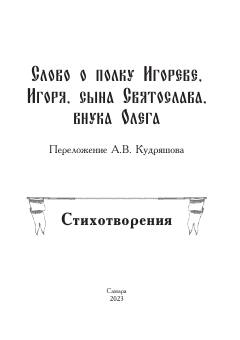

СОQadimgi rus dostoni «Igor polki haqida so'z»ning zamonaviy talqini va muallif she'rlari to'plami.
Ushbu kitob qadimgi rus adabiyoti yodgorligi bo'lgan «Igor polki haqida so'z» asarining zamonaviy mualliflik talqinini va muallifning vatanparvarlik mavzusidagi she'rlarini o'z ichiga oladi. Asar Igor va Vsevolod knyazlarining polovetslarga qarshi yurishini tasvirlab, rus knyazlarini birlashishga chaqiradi.